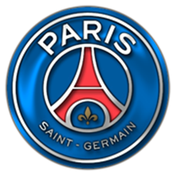

Historia
El Paris Saint-Germain Football Club, conocido popularmente como Paris Saint-Germain o por su acrónimo PSG, es un club de fútbol profesional con sede en París, Francia. El club fue fundado el 12 de agosto de 1970 gracias a la fusión del París FC y el Stade Saint-Germain. El PSG ha estado jugando en la Ligue 1 desde 1974, el récord de más participaciones de manera consecutiva del campeonato en curso, siendo el único equipo francés que nunca ha descendido y uno de los equipos más prestigiosos del país después de haber ganado seis Ligas, once Copas de Francia, siete Copas de la Liga y siete Trophées des Champions. El PSG, junto con el Olympique de Marsella, es uno de los dos únicos clubes franceses que han ganado un título europeo, la Recopa de Europa de 1996 y la Copa Intertoto de la UEFA de 2001.
|
Escudo

|
Titulo |
Cantidad |
| Uefa Champios League |
0 |
| Liga de Francia |
6 |
| Copa de Francia |
11 |
| Mundial de clubes |
0 |
| Supercopa de Francia |
0 |
| Supercopa de europa |
0 |
|